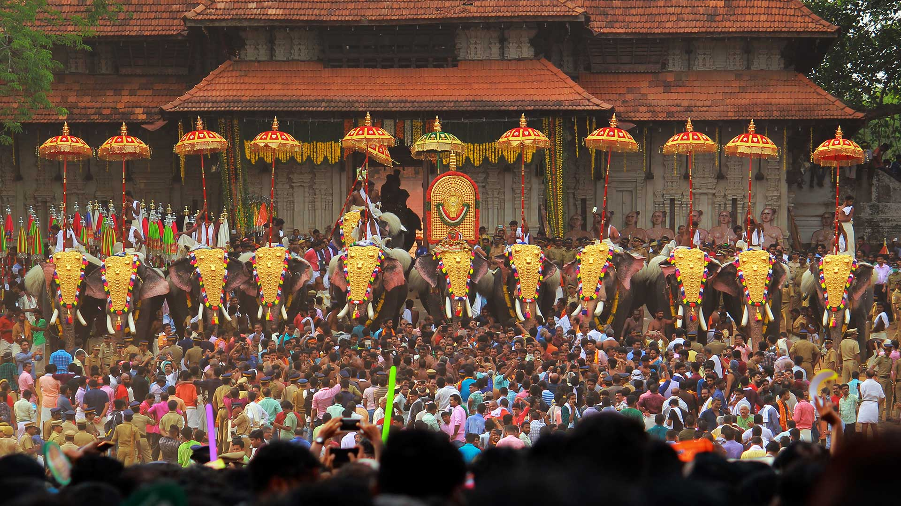

Officially known as the cultural capital of Kerala, Thrissur is famous for fostering classical Keralan performing arts, religious sites and the renowned Thrissur Pooram festival, Onam festival and Vadakkumnathan Temple. Thrissur is the short form of Thiru-Shiva-Per-Ur which literally means “a city with three temples of Lord Shiva”. Thrissur later became anglicised to Trichur. Thrissur is from where Kerala gets a fair share of its festive glitter. Thrissur was the capital of the Kingdom of Kochi. The festivals celebrated here are the major attraction for tourists and a visit to Thrissur is incomplete without witnessing these. Other tourist spots in Thrissur include the Vadakkumnathan Kshetram Temple, Tomb of Shakthan Thampuran, Archaeology Museum, Athirapally Falls, Heritage Garden and many more.

Thrissur Pooram
A resplendent festival celebrated with a grand display of caparisoned elephants, dazzling parasols, and percussion music, the Thrissur Pooram is a magnificent spectacle merging the spiritual and cultural essence of Kerala. Celebrated in the Malayalam month of medam (April-May), the pooram is held at the Thekkinkadu Maidanam in Thrissur.
Vadakkumnathan Temple
With a collection of beautiful Mural paintings, some of which are more than 400 years old, this gigantic 1000 year old temple and historical structure is famous for the Nataraja Mural near the main gate.
Athirappilly Falls
Located 60 km from the Thrissur district of Kerala, Athirapally Falls is a marvellous cascade of frothy waters that makes its way from the Anamudi mountains of the Western Ghats. Also called as Bahubali Waterfall, this 80 ft high and 330 ft wide marvel is the largest waterfall in Kerala.
Thrissur, which means “town with the name of Lord Shiva”, happens to be the cultural hub of Kerala. In the past, it has been an important centre of learning of different religions like Buddhism, Jainism, and Brahmanism. Thrissur was also an important centre for the study of Sanskrit. The great Sankara Acharya had taught Advait in this city, and had settled and died there only. Later, his four disciples established four Madoms in the city. Thrissur rose in terms of its historical importance in the year 1790 when Raja Ram Verma (also known as “Sakthan Thampuran”) ascended the throne of Kochi. The ascendance of Raja Ram Verma as the ruler has been marked as the beginning of a modern historical era in Thrissur. Thrissur was also the capital of the Kochi kingdom for a brief period.